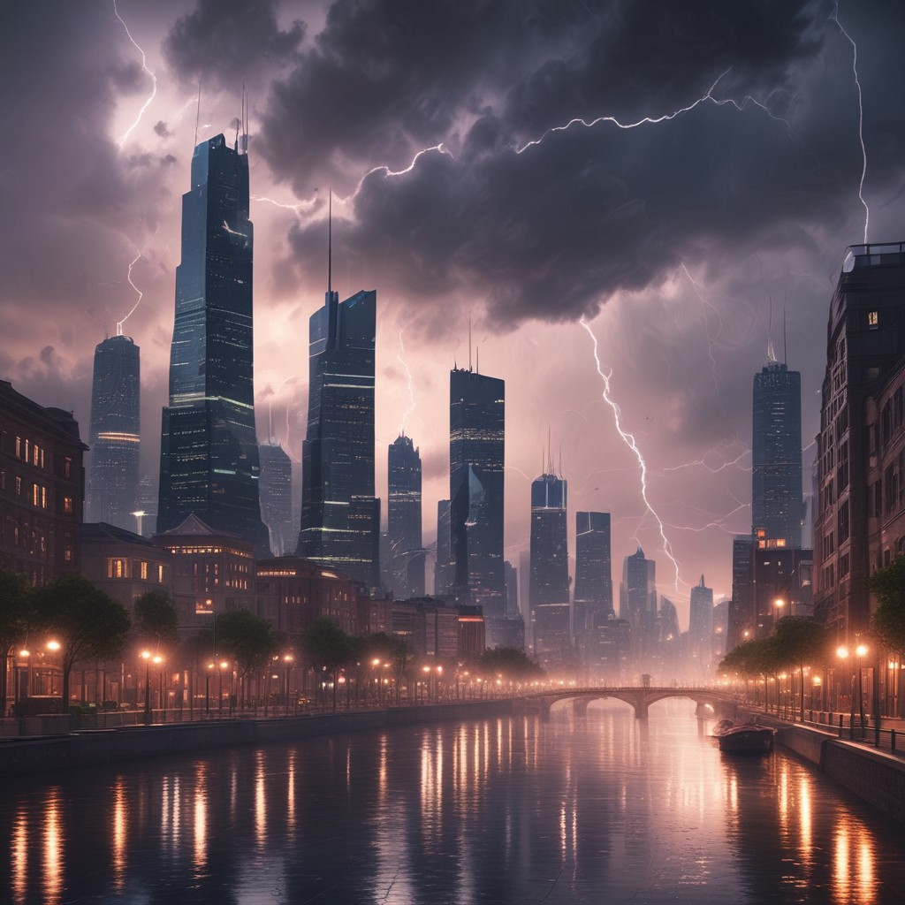

✅ 5 Common Visual Features:
1. Centralized Lightning Strikes
All images feature prominent bolts of lightning, usually targeting the tallest building in the city. This dramatic focal point adds tension and intensity to the composition.
2. Skyscraper-Dominated Skylines
The cityscapes are filled with high-rise buildings, often with futuristic or hyper-modern architecture. This verticality enhances the power of the storm and the feeling of vulnerability.
3. Stormy, Moody Atmosphere
Dark clouds, often with tinges of blue or purple, dominate the upper part of the image. The lighting emphasizes contrast between the bright bolts and the gloomy sky, evoking a dramatic, cinematic effect.
1. Centralized Lightning Strikes
All images feature prominent bolts of lightning, usually targeting the tallest building in the city. This dramatic focal point adds tension and intensity to the composition.
2. Skyscraper-Dominated Skylines
The cityscapes are filled with high-rise buildings, often with futuristic or hyper-modern architecture. This verticality enhances the power of the storm and the feeling of vulnerability.
3. Stormy, Moody Atmosphere
Dark clouds, often with tinges of blue or purple, dominate the upper part of the image. The lighting emphasizes contrast between the bright bolts and the gloomy sky, evoking a dramatic, cinematic effect.
4. Water Reflection or Aerial Perspective
Some images include rivers, coastlines, or reflections, adding depth and scale. Others are shot from above, reinforcing the epic scale and chaos of the storm.
5. Symmetry and Composition
Most images are composed with central balance (lightning in the middle, skyline extending evenly to the sides). This enhances the awe and visual stability amid the chaotic weather.
🤖 Why AI Models Generate These Results:
1. Associative Prompt Patterns - Prompts like "lightning," "stormy skyline," or "futuristic thunderstorm" trigger AI's learned associations with strong contrast, moody colors, and iconic lightning compositions.
2. Learned from Media Tropes - AI has been trained on countless action movie posters, disaster film scenes (e.g., Independence Day, Godzilla, The Dark Knight), and dramatic weather photography.
3. Visual Drama Optimization - Lightning against a city backdrop naturally creates high dynamic range (HDR) with glowing edges, making it visually "striking".
4. Tall Structure = Lightning Magnet - AI reflects real-world physics where lightning typically targets the tallest point, like skyscrapers.
5. Narrative Implication - The combination of lightning + urban landscape implies a story or event (crisis, tension, energy), which stimulates viewer interpretation and emotional impact.
Some images include rivers, coastlines, or reflections, adding depth and scale. Others are shot from above, reinforcing the epic scale and chaos of the storm.
5. Symmetry and Composition
Most images are composed with central balance (lightning in the middle, skyline extending evenly to the sides). This enhances the awe and visual stability amid the chaotic weather.
🤖 Why AI Models Generate These Results:
1. Associative Prompt Patterns - Prompts like "lightning," "stormy skyline," or "futuristic thunderstorm" trigger AI's learned associations with strong contrast, moody colors, and iconic lightning compositions.
2. Learned from Media Tropes - AI has been trained on countless action movie posters, disaster film scenes (e.g., Independence Day, Godzilla, The Dark Knight), and dramatic weather photography.
3. Visual Drama Optimization - Lightning against a city backdrop naturally creates high dynamic range (HDR) with glowing edges, making it visually "striking".
4. Tall Structure = Lightning Magnet - AI reflects real-world physics where lightning typically targets the tallest point, like skyscrapers.
5. Narrative Implication - The combination of lightning + urban landscape implies a story or event (crisis, tension, energy), which stimulates viewer interpretation and emotional impact.

By Dall-E
Colored figure
Evil alien characters
Blue and Pink
Dark moody star

By Pixar
Neon lights
Urban decay
Pink glow
Futuristic
.png)
By Stable Diffusion
Dark atmosphere
Blue tones
Silhouette
Mysterious

By Deep
Long corridor
Purple hues
Symmetrical
Perspective

By Firefly
Red dominant
High contrast
Moody lighting
Cinematic

By Imagen
Blue ambiance
Reflective surfaces
Clean lines
Modern tech